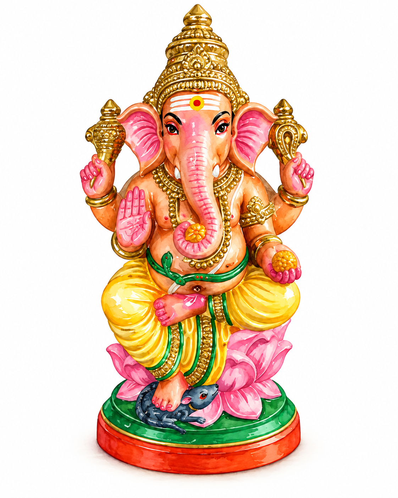

A Golu figure
Ganesha: The Elephant-Headed God of New Beginnings
Before a journey, a ceremony, an exam, or any important first step, many people turn to Ganesha.

First for every beginning
One of the most recognisable Hindu deities, Ganesha is associated with wisdom, patience, and clearing the way ahead. He is often the first deity people honour when something important is about to begin: a marriage, the birth of a child, a new business, an exam, or an audition.
That tradition is not a promise that every obstacle will disappear. Instead, Ganesha represents the steadiness, clear thinking, and determination needed to meet what lies ahead.
Why an elephant head?
In one popular legend, Parvati created a boy to guard her door while she bathed. When Shiva returned, the boy would not let him enter. Shiva did not know that this was his son, Ganesha, and in a terrible moment of anger cut off the boy’s head.
Parvati was furious. To make amends, Shiva restored the child to life and gave him the head of an elephant. The story is dramatic, but it also explains the distinctive form of the beloved deity seen on Golu steps and in homes around the world.
A form full of meaning
Almost every part of Ganesha’s appearance carries a lesson. His elephant head suggests wisdom and intelligence; his large ears remind us to listen carefully; and his small eyes suggest the concentration needed to see a task through.
His broken tusk has its own story. When Ganesha was transcribing the Mahabharata as the sage Vyasa dictated it, his writing instrument broke. Rather than interrupt the telling, he broke off his own tusk and used it to keep writing—an unforgettable image of sacrifice and perseverance.
The little mouse at his feet
Look closely at a Ganesha figure and you will often find a tiny mouse nearby. This is his vahana, or vehicle. The restless mouse represents the human mind: always scurrying, searching for the next interesting thing, and never quite satisfied.
The sight of an elephant-headed god riding such a small creature is gently humorous, but its message is serious. It suggests mastery over desire, impulse, and ego. Together, Ganesha and the mouse remind us to bring wisdom, focus, and self-control to the obstacles in our path.